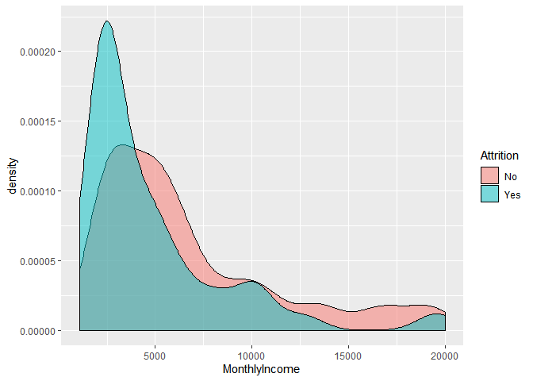
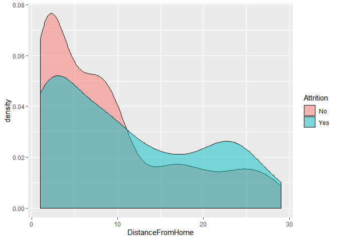
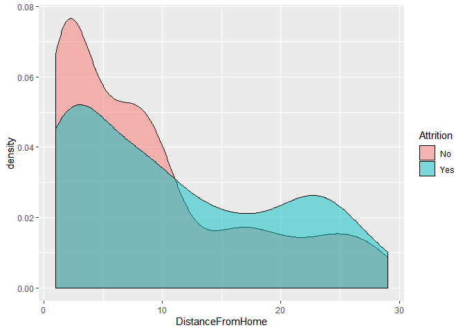

Define the Goals:
Using attrition Data Set, identify the top three factors that contribute to turnover/attrition. Also, explore job role specific trends that may exist in the data set (e.g., “Data Scientists have the highest job satisfaction”).
build a model to predict attrition
List of needed Libraries
Data Read
Initial Meta Data and Data Profiling Analysis
## Skim summary statistics
## n obs: 870
## n variables: 36
##
## -- Variable type:factor ------------------------------------------------------------------------------------------
## variable missing complete n n_unique
## Attrition 0 870 870 2
## BusinessTravel 0 870 870 3
## Department 0 870 870 3
## EducationField 0 870 870 6
## Gender 0 870 870 2
## JobRole 0 870 870 9
## MaritalStatus 0 870 870 3
## Over18 0 870 870 1
## OverTime 0 870 870 2
## top_counts ordered
## No: 730, Yes: 140, NA: 0 FALSE
## Tra: 618, Tra: 158, Non: 94, NA: 0 FALSE
## Res: 562, Sal: 273, Hum: 35, NA: 0 FALSE
## Lif: 358, Med: 270, Mar: 100, Tec: 75 FALSE
## Mal: 516, Fem: 354, NA: 0 FALSE
## Sal: 200, Res: 172, Lab: 153, Man: 87 FALSE
## Mar: 410, Sin: 269, Div: 191, NA: 0 FALSE
## Y: 870, NA: 0 FALSE
## No: 618, Yes: 252, NA: 0 FALSE
##
## -- Variable type:integer -----------------------------------------------------------------------------------------
## variable missing complete n mean sd p0
## Age 0 870 870 36.83 8.93 18
## DailyRate 0 870 870 815.23 401.12 103
## DistanceFromHome 0 870 870 9.34 8.14 1
## Education 0 870 870 2.9 1.02 1
## EmployeeCount 0 870 870 1 0 1
## EmployeeNumber 0 870 870 1029.83 604.79 1
## EnvironmentSatisfaction 0 870 870 2.7 1.1 1
## HourlyRate 0 870 870 65.61 20.13 30
## ID 0 870 870 435.5 251.29 1
## JobInvolvement 0 870 870 2.72 0.7 1
## JobLevel 0 870 870 2.04 1.09 1
## JobSatisfaction 0 870 870 2.71 1.11 1
## MonthlyIncome 0 870 870 6390.26 4597.7 1081
## MonthlyRate 0 870 870 14325.62 7108.38 2094
## NumCompaniesWorked 0 870 870 2.73 2.52 0
## PercentSalaryHike 0 870 870 15.2 3.68 11
## PerformanceRating 0 870 870 3.15 0.36 3
## RelationshipSatisfaction 0 870 870 2.71 1.1 1
## StandardHours 0 870 870 80 0 80
## StockOptionLevel 0 870 870 0.78 0.86 0
## TotalWorkingYears 0 870 870 11.05 7.51 0
## TrainingTimesLastYear 0 870 870 2.83 1.27 0
## WorkLifeBalance 0 870 870 2.78 0.71 1
## YearsAtCompany 0 870 870 6.96 6.02 0
## YearsInCurrentRole 0 870 870 4.2 3.64 0
## YearsSinceLastPromotion 0 870 870 2.17 3.19 0
## YearsWithCurrManager 0 870 870 4.14 3.57 0
## p25 p50 p75 p100 hist
## 30 35 43 60 <U+2581><U+2583><U+2586><U+2587><U+2585><U+2583><U+2582><U+2582>
## 472.5 817.5 1165.75 1499 <U+2586><U+2586><U+2587><U+2587><U+2587><U+2586><U+2587><U+2587>
## 2 7 14 29 <U+2587><U+2585><U+2583><U+2581><U+2581><U+2581><U+2581><U+2581>
## 2 3 4 5 <U+2582><U+2585><U+2581><U+2587><U+2581><U+2586><U+2581><U+2581>
## 1 1 1 1 <U+2581><U+2581><U+2581><U+2587><U+2581><U+2581><U+2581><U+2581>
## 477.25 1039 1561.5 2064 <U+2587><U+2587><U+2586><U+2587><U+2587><U+2587><U+2587><U+2587>
## 2 3 4 4 <U+2585><U+2581><U+2586><U+2581><U+2581><U+2587><U+2581><U+2587>
## 48 66 83 100 <U+2586><U+2587><U+2587><U+2587><U+2586><U+2587><U+2587><U+2587>
## 218.25 435.5 652.75 870 <U+2587><U+2587><U+2587><U+2587><U+2587><U+2587><U+2587><U+2587>
## 2 3 3 4 <U+2581><U+2581><U+2583><U+2581><U+2581><U+2587><U+2581><U+2581>
## 1 2 3 5 <U+2587><U+2587><U+2581><U+2583><U+2581><U+2582><U+2581><U+2581>
## 2 3 4 4 <U+2585><U+2581><U+2585><U+2581><U+2581><U+2587><U+2581><U+2587>
## 2839.5 4945.5 8182 19999 <U+2587><U+2587><U+2583><U+2582><U+2581><U+2581><U+2581><U+2581>
## 8092 14074.5 20456.25 26997 <U+2586><U+2587><U+2587><U+2587><U+2587><U+2586><U+2587><U+2586>
## 1 2 4 9 <U+2587><U+2582><U+2582><U+2582><U+2581><U+2581><U+2581><U+2581>
## 12 14 18 25 <U+2587><U+2587><U+2583><U+2583><U+2581><U+2582><U+2582><U+2581>
## 3 3 3 4 <U+2587><U+2581><U+2581><U+2581><U+2581><U+2581><U+2581><U+2582>
## 2 3 4 4 <U+2585><U+2581><U+2585><U+2581><U+2581><U+2587><U+2581><U+2587>
## 80 80 80 80 <U+2581><U+2581><U+2581><U+2587><U+2581><U+2581><U+2581><U+2581>
## 0 1 1 3 <U+2587><U+2581><U+2587><U+2581><U+2581><U+2582><U+2581><U+2581>
## 6 10 15 40 <U+2585><U+2587><U+2582><U+2582><U+2581><U+2581><U+2581><U+2581>
## 2 3 3 6 <U+2581><U+2581><U+2587><U+2587><U+2581><U+2582><U+2582><U+2581>
## 2 3 3 4 <U+2581><U+2581><U+2583><U+2581><U+2581><U+2587><U+2581><U+2582>
## 3 5 10 40 <U+2587><U+2585><U+2581><U+2581><U+2581><U+2581><U+2581><U+2581>
## 2 3 7 18 <U+2587><U+2582><U+2581><U+2585><U+2581><U+2581><U+2581><U+2581>
## 0 1 3 15 <U+2587><U+2582><U+2581><U+2581><U+2581><U+2581><U+2581><U+2581>
## 2 3 7 17 <U+2587><U+2582><U+2581><U+2583><U+2581><U+2581><U+2581><U+2581>


Variable pruning
variables that have SD=0, or have one value for example over18=Yes, or provide similar information will be removed from the data set as they are not providing any analyticle value. Additional pruning was done using correlation analysis. Heat map was produced to remove attributes that are highly correlated.
Correlated Attributes:
Identify correlated attributes using heat map and keep only one
 ## Determine which of the numerical (discreet and continuous) attributes is important to attrition
## Determine which of the numerical (discreet and continuous) attributes is important to attrition
Age:
Age does not seem to have much impact on attrition where the average age of the employees that are is slightly lower than the average age of employees that are staying.


 ### Years At Company: The age observation closely tracks with the years at the company. This attribute also shows slight significance as it relates to attrition. The density chart shows emloyees tend to mostly leave within years 1-3 ### Years with current manager: The number of years working with the same manager does not seem to have much impact on attrition.
### Years At Company: The age observation closely tracks with the years at the company. This attribute also shows slight significance as it relates to attrition. The density chart shows emloyees tend to mostly leave within years 1-3 ### Years with current manager: The number of years working with the same manager does not seem to have much impact on attrition.
 ### Years in current role: The varialbe does not seem to have much impact on attrition
### Years in current role: The varialbe does not seem to have much impact on attrition 
Total Working Years:
This variable seems to have some impact on attrition as the density graph shows the density for the yes and no categories are slightly off indicating some influence. ### Nonthly Income: This variable seems to have some impact on attrition as the density graph shows the density for the yes and no categories are slightly off indicating some influence. This variable doest not seem to have some impact on attrition as the density graph shows the density for the yes and no categories are almost aligned indicating minmmalinfluence.  #
#
 ### Distance from home: This attribute appears to have an influence on attrition the density graph shows that people that have shorter commute have a higher probability of staying (not quitting)  ### Education level: Density chart for both attrition categories (Yes/No) is not much different base on education level. One exception is Employees with Bachelor degree (4 years) seem to have higher tendency to stay with the company. 
### Education level: Density chart for both attrition categories (Yes/No) is not much different base on education level. One exception is Employees with Bachelor degree (4 years) seem to have higher tendency to stay with the company. 


## Warning: Columns with 0 variance found: JobInvolvement
Categorical Analysis
Attrition by Dept: Attrition level for the various dept is consistent and thus does not appear to be relevant to attrition
## [1] "The first 6 observations of the merged file:"## Department AttritionStatus AttrStatusCnt DeptCount
## 1 Human Resources No 29 35
## 2 Human Resources Yes 6 35
## 3 Research & Development No 487 562
## 4 Research & Development Yes 75 562
## 5 Sales No 214 273
## 6 Sales Yes 59 273### Attrition By Education: Attrition across the various education level is consistent and thus does not appear to be relevant to attrition
## [1] "The first 6 observations of the merged file:"## EducationField AttritionStatus AttrStatusCnt EdCount Perc
## 1 Human Resources No 11 15 0.7333333
## 2 Human Resources Yes 4 15 0.2666667
## 3 Life Sciences No 305 358 0.8519553
## 4 Life Sciences Yes 53 358 0.1480447
## 5 Marketing No 80 100 0.8000000
## 6 Marketing Yes 20 100 0.2000000### Attrition By Gender Attrition for both is consistent and thus does not appear to be relevant to attrition
## 'data.frame': 870 obs. of 23 variables:
## $ ID : int 1 2 3 4 5 6 7 8 9 10 ...
## $ Age : int 32 40 35 32 24 27 41 37 34 34 ...
## $ Attrition : Factor w/ 2 levels "No","Yes": 1 1 1 1 1 1 1 1 1 1 ...
## $ BusinessTravel : Factor w/ 3 levels "Non-Travel","Travel_Frequently",..: 3 3 2 3 2 2 3 3 3 2 ...
## $ Department : Factor w/ 3 levels "Human Resources",..: 3 2 2 3 2 2 2 3 3 2 ...
## $ DistanceFromHome : int 13 14 18 1 2 10 5 10 10 10 ...
## $ Education : int 4 3 2 4 1 2 5 4 4 4 ...
## $ EducationField : Factor w/ 6 levels "Human Resources",..: 2 4 2 3 6 2 4 2 2 6 ...
## $ EnvironmentSatisfaction : int 2 3 3 3 1 4 2 4 3 4 ...
## $ Gender : Factor w/ 2 levels "Female","Male": 2 2 2 1 1 2 2 1 1 2 ...
## $ JobInvolvement : int 3 2 3 3 3 3 4 2 3 2 ...
## $ JobLevel : int 2 5 3 3 1 3 1 2 1 2 ...
## $ JobRole : Factor w/ 9 levels "Healthcare Representative",..: 8 6 5 8 7 5 7 8 9 1 ...
## $ JobSatisfaction : int 4 3 4 4 4 1 3 4 3 3 ...
## $ MaritalStatus : Factor w/ 3 levels "Divorced","Married",..: 1 3 3 2 3 1 2 1 2 2 ...
## $ MonthlyIncome : int 4403 19626 9362 10422 3760 8793 2127 6694 2220 5063 ...
## $ NumCompaniesWorked : int 2 1 2 1 1 1 2 2 1 1 ...
## $ OverTime : Factor w/ 2 levels "No","Yes": 1 1 1 1 2 1 2 2 2 1 ...
## $ PercentSalaryHike : int 11 14 11 19 13 21 12 14 19 14 ...
## $ RelationshipSatisfaction: int 3 1 3 3 3 3 1 3 4 2 ...
## $ StockOptionLevel : int 1 0 0 2 0 2 0 3 1 1 ...
## $ TrainingTimesLastYear : int 3 2 2 3 2 4 5 5 2 3 ...
## $ WorkLifeBalance : int 2 4 3 3 3 2 2 3 3 2 ...## [1] "The first 6 observations of the merged file:"## Gender AttritionStatus AttrStatusCnt GdCount Perc
## 1 Female No 301 354 0.8502825
## 2 Female Yes 53 354 0.1497175
## 3 Male No 429 516 0.8313953
## 4 Male Yes 87 516 0.1686047 ### Attrition By Job Role: This variable appears to play a significant role in attrition whereby the Sales Representative have a high attrition rate of 45.3% nearly twice as high the next job role of Human resources which has a rate of 22.2%.
### Attrition By Job Role: This variable appears to play a significant role in attrition whereby the Sales Representative have a high attrition rate of 45.3% nearly twice as high the next job role of Human resources which has a rate of 22.2%.
## 'data.frame': 870 obs. of 23 variables:
## $ ID : int 1 2 3 4 5 6 7 8 9 10 ...
## $ Age : int 32 40 35 32 24 27 41 37 34 34 ...
## $ Attrition : Factor w/ 2 levels "No","Yes": 1 1 1 1 1 1 1 1 1 1 ...
## $ BusinessTravel : Factor w/ 3 levels "Non-Travel","Travel_Frequently",..: 3 3 2 3 2 2 3 3 3 2 ...
## $ Department : Factor w/ 3 levels "Human Resources",..: 3 2 2 3 2 2 2 3 3 2 ...
## $ DistanceFromHome : int 13 14 18 1 2 10 5 10 10 10 ...
## $ Education : int 4 3 2 4 1 2 5 4 4 4 ...
## $ EducationField : Factor w/ 6 levels "Human Resources",..: 2 4 2 3 6 2 4 2 2 6 ...
## $ EnvironmentSatisfaction : int 2 3 3 3 1 4 2 4 3 4 ...
## $ Gender : Factor w/ 2 levels "Female","Male": 2 2 2 1 1 2 2 1 1 2 ...
## $ JobInvolvement : int 3 2 3 3 3 3 4 2 3 2 ...
## $ JobLevel : int 2 5 3 3 1 3 1 2 1 2 ...
## $ JobRole : Factor w/ 9 levels "Healthcare Representative",..: 8 6 5 8 7 5 7 8 9 1 ...
## $ JobSatisfaction : int 4 3 4 4 4 1 3 4 3 3 ...
## $ MaritalStatus : Factor w/ 3 levels "Divorced","Married",..: 1 3 3 2 3 1 2 1 2 2 ...
## $ MonthlyIncome : int 4403 19626 9362 10422 3760 8793 2127 6694 2220 5063 ...
## $ NumCompaniesWorked : int 2 1 2 1 1 1 2 2 1 1 ...
## $ OverTime : Factor w/ 2 levels "No","Yes": 1 1 1 1 2 1 2 2 2 1 ...
## $ PercentSalaryHike : int 11 14 11 19 13 21 12 14 19 14 ...
## $ RelationshipSatisfaction: int 3 1 3 3 3 3 1 3 4 2 ...
## $ StockOptionLevel : int 1 0 0 2 0 2 0 3 1 1 ...
## $ TrainingTimesLastYear : int 3 2 2 3 2 4 5 5 2 3 ...
## $ WorkLifeBalance : int 2 4 3 3 3 2 2 3 3 2 ...## [1] "The first 6 observations of the merged file:"## JobRole AttritionStatus AttrStatusCnt GdCount
## 1 Healthcare Representative No 68 76
## 2 Healthcare Representative Yes 8 76
## 3 Human Resources No 21 27
## 4 Human Resources Yes 6 27
## 5 Laboratory Technician No 123 153
## 6 Laboratory Technician Yes 30 153
## Perc
## 1 0.8947368
## 2 0.1052632
## 3 0.7777778
## 4 0.2222222
## 5 0.8039216
## 6 0.1960784### Attrition By Marital Status: This variable appears to play a significant role in attrition whereby the singles have a high attrition rate of 26.0% nearly twice as high the married which has a rate of 14.1%.
## 'data.frame': 870 obs. of 23 variables:
## $ ID : int 1 2 3 4 5 6 7 8 9 10 ...
## $ Age : int 32 40 35 32 24 27 41 37 34 34 ...
## $ Attrition : Factor w/ 2 levels "No","Yes": 1 1 1 1 1 1 1 1 1 1 ...
## $ BusinessTravel : Factor w/ 3 levels "Non-Travel","Travel_Frequently",..: 3 3 2 3 2 2 3 3 3 2 ...
## $ Department : Factor w/ 3 levels "Human Resources",..: 3 2 2 3 2 2 2 3 3 2 ...
## $ DistanceFromHome : int 13 14 18 1 2 10 5 10 10 10 ...
## $ Education : int 4 3 2 4 1 2 5 4 4 4 ...
## $ EducationField : Factor w/ 6 levels "Human Resources",..: 2 4 2 3 6 2 4 2 2 6 ...
## $ EnvironmentSatisfaction : int 2 3 3 3 1 4 2 4 3 4 ...
## $ Gender : Factor w/ 2 levels "Female","Male": 2 2 2 1 1 2 2 1 1 2 ...
## $ JobInvolvement : int 3 2 3 3 3 3 4 2 3 2 ...
## $ JobLevel : int 2 5 3 3 1 3 1 2 1 2 ...
## $ JobRole : Factor w/ 9 levels "Healthcare Representative",..: 8 6 5 8 7 5 7 8 9 1 ...
## $ JobSatisfaction : int 4 3 4 4 4 1 3 4 3 3 ...
## $ MaritalStatus : Factor w/ 3 levels "Divorced","Married",..: 1 3 3 2 3 1 2 1 2 2 ...
## $ MonthlyIncome : int 4403 19626 9362 10422 3760 8793 2127 6694 2220 5063 ...
## $ NumCompaniesWorked : int 2 1 2 1 1 1 2 2 1 1 ...
## $ OverTime : Factor w/ 2 levels "No","Yes": 1 1 1 1 2 1 2 2 2 1 ...
## $ PercentSalaryHike : int 11 14 11 19 13 21 12 14 19 14 ...
## $ RelationshipSatisfaction: int 3 1 3 3 3 3 1 3 4 2 ...
## $ StockOptionLevel : int 1 0 0 2 0 2 0 3 1 1 ...
## $ TrainingTimesLastYear : int 3 2 2 3 2 4 5 5 2 3 ...
## $ WorkLifeBalance : int 2 4 3 3 3 2 2 3 3 2 ...## [1] "The first 6 observations of the merged file:"## MaritalStatus AttritionStatus AttrStatusCnt GdCount Perc
## 1 Divorced No 179 191 0.93717277
## 2 Divorced Yes 12 191 0.06282723
## 3 Married No 352 410 0.85853659
## 4 Married Yes 58 410 0.14146341
## 5 Single No 199 269 0.73977695
## 6 Single Yes 70 269 0.26022305### Attrition By Over Time Status: This variable appears to play a significant role in attrition whereby over time employees have a high attrition rate of 31.7% are three times as likely to be attritioned as non-overtime employees at 9.7%.
## 'data.frame': 870 obs. of 23 variables:
## $ ID : int 1 2 3 4 5 6 7 8 9 10 ...
## $ Age : int 32 40 35 32 24 27 41 37 34 34 ...
## $ Attrition : Factor w/ 2 levels "No","Yes": 1 1 1 1 1 1 1 1 1 1 ...
## $ BusinessTravel : Factor w/ 3 levels "Non-Travel","Travel_Frequently",..: 3 3 2 3 2 2 3 3 3 2 ...
## $ Department : Factor w/ 3 levels "Human Resources",..: 3 2 2 3 2 2 2 3 3 2 ...
## $ DistanceFromHome : int 13 14 18 1 2 10 5 10 10 10 ...
## $ Education : int 4 3 2 4 1 2 5 4 4 4 ...
## $ EducationField : Factor w/ 6 levels "Human Resources",..: 2 4 2 3 6 2 4 2 2 6 ...
## $ EnvironmentSatisfaction : int 2 3 3 3 1 4 2 4 3 4 ...
## $ Gender : Factor w/ 2 levels "Female","Male": 2 2 2 1 1 2 2 1 1 2 ...
## $ JobInvolvement : int 3 2 3 3 3 3 4 2 3 2 ...
## $ JobLevel : int 2 5 3 3 1 3 1 2 1 2 ...
## $ JobRole : Factor w/ 9 levels "Healthcare Representative",..: 8 6 5 8 7 5 7 8 9 1 ...
## $ JobSatisfaction : int 4 3 4 4 4 1 3 4 3 3 ...
## $ MaritalStatus : Factor w/ 3 levels "Divorced","Married",..: 1 3 3 2 3 1 2 1 2 2 ...
## $ MonthlyIncome : int 4403 19626 9362 10422 3760 8793 2127 6694 2220 5063 ...
## $ NumCompaniesWorked : int 2 1 2 1 1 1 2 2 1 1 ...
## $ OverTime : Factor w/ 2 levels "No","Yes": 1 1 1 1 2 1 2 2 2 1 ...
## $ PercentSalaryHike : int 11 14 11 19 13 21 12 14 19 14 ...
## $ RelationshipSatisfaction: int 3 1 3 3 3 3 1 3 4 2 ...
## $ StockOptionLevel : int 1 0 0 2 0 2 0 3 1 1 ...
## $ TrainingTimesLastYear : int 3 2 2 3 2 4 5 5 2 3 ...
## $ WorkLifeBalance : int 2 4 3 3 3 2 2 3 3 2 ...## [1] "The first 6 observations of the merged file:"## OverTime AttritionStatus AttrStatusCnt GdCount Perc
## 1 No No 558 618 0.90291262
## 2 No Yes 60 618 0.09708738
## 3 Yes No 172 252 0.68253968
## 4 Yes Yes 80 252 0.31746032


 ### Attrition By Stock Option Level: This variable appears to play a significant role in attrition whereby employees receiving no stock options (level 0) and those who receive the highest option (level = 3) have a high attrition rate the is almost three times that of employees the receive stock options at level 1 and 2.
### Attrition By Stock Option Level: This variable appears to play a significant role in attrition whereby employees receiving no stock options (level 0) and those who receive the highest option (level = 3) have a high attrition rate the is almost three times that of employees the receive stock options at level 1 and 2.
## [1] "The first 6 observations of the merged file:"## StockOptionLevel AttritionStatus AttrStatusCnt GdCount Perc
## 1 0 No 281 379 0.74142480
## 2 0 Yes 98 379 0.25857520
## 3 1 No 328 355 0.92394366
## 4 1 Yes 27 355 0.07605634
## 5 2 No 78 81 0.96296296
## 6 2 Yes 3 81 0.03703704### Attrition By Work Life Balance: The majority of work-life balance categories have similar attrition rates.
## [1] "The first 6 observations of the merged file:"## WorkLifeBalance AttritionStatus AttrStatusCnt GdCount Perc
## 1 1 No 31 48 0.6458333
## 2 1 Yes 17 48 0.3541667
## 3 2 No 162 192 0.8437500
## 4 2 Yes 30 192 0.1562500
## 5 3 No 452 532 0.8496241
## 6 3 Yes 80 532 0.1503759 ### Attrition By Job Level: This variable appears to play a significant role in attrition whereby the various job levels have drastically different attrition rates.
### Attrition By Job Level: This variable appears to play a significant role in attrition whereby the various job levels have drastically different attrition rates.
## JobLevel AttritionStatus AttrStatusCnt GdCount Perc
## 1 1 No 243 329 0.73860182
## 2 1 Yes 86 329 0.26139818
## 3 2 No 282 312 0.90384615
## 4 2 Yes 30 312 0.09615385
## 5 3 No 115 132 0.87121212
## 6 3 Yes 17 132 0.12878788### Attrition By Environment Satisfaction: The attrition rate is mostly consistent across the various levels
## EnvironmentSatisfaction AttritionStatus AttrStatusCnt GdCount Perc
## 1 1 No 130 172 0.7558140
## 2 1 Yes 42 172 0.2441860
## 3 2 No 154 178 0.8651685
## 4 2 Yes 24 178 0.1348315
## 5 3 No 223 258 0.8643411
## 6 3 Yes 35 258 0.1356589 ### Attrition By Job Involvement: This variable appears to play a significant role in attrition whereby employees receiving low job involvement (level 1) are 4 times as likely to be attritioned (46.9%) as those in the next level of job involvement whose attrition rate is (19.3%)
### Attrition By Job Involvement: This variable appears to play a significant role in attrition whereby employees receiving low job involvement (level 1) are 4 times as likely to be attritioned (46.9%) as those in the next level of job involvement whose attrition rate is (19.3%)  ### Attrition by Job Satisfaction: This variable does not seem to have minimal influence on attrition.
### Attrition by Job Satisfaction: This variable does not seem to have minimal influence on attrition.  ### Attrition by Training Times Last Year: This variable appears to play a significant role in attrition whereby employees receiving different levels of training have different attrition rates.
### Attrition by Training Times Last Year: This variable appears to play a significant role in attrition whereby employees receiving different levels of training have different attrition rates.  ### Classify using the KNN. Tried using Under sample, Over Sample and both none of the balanced training data produced the desired effect, to I decided to use the original data set. Using the analysis of the categorical and continuous variables conducted above, the following variables were selected to fit a KNN Model: StockOptionLevel, DistanceFromHome, MonthlyIncome, JobInvolvement. Through multiple iteration of K, Seed optimization, and different train/test split ratios the following parameters were the most optimal: K= 7, Split = 85%, and Seed = 100. With these parameters, the model was fitted and trained and the below are the outcomes: prediction Accuracy = 86.1%, Specificity = 75% Sensitivity = 86.5%
### Classify using the KNN. Tried using Under sample, Over Sample and both none of the balanced training data produced the desired effect, to I decided to use the original data set. Using the analysis of the categorical and continuous variables conducted above, the following variables were selected to fit a KNN Model: StockOptionLevel, DistanceFromHome, MonthlyIncome, JobInvolvement. Through multiple iteration of K, Seed optimization, and different train/test split ratios the following parameters were the most optimal: K= 7, Split = 85%, and Seed = 100. With these parameters, the model was fitted and trained and the below are the outcomes: prediction Accuracy = 86.1%, Specificity = 75% Sensitivity = 86.5%
## Confusion Matrix and Statistics
##
## classifications
## No Yes
## No 109 1
## Yes 17 3
##
## Accuracy : 0.8615
## 95% CI : (0.79, 0.9158)
## No Information Rate : 0.9692
## P-Value [Acc > NIR] : 1.000000
##
## Kappa : 0.2095
##
## Mcnemar's Test P-Value : 0.000407
##
## Sensitivity : 0.8651
## Specificity : 0.7500
## Pos Pred Value : 0.9909
## Neg Pred Value : 0.1500
## Prevalence : 0.9692
## Detection Rate : 0.8385
## Detection Prevalence : 0.8462
## Balanced Accuracy : 0.8075
##
## 'Positive' Class : No
## ## [1] 4## [1] 4## [1] 49
 ### Predict the Attrition from File
### Predict the Attrition from File
Naive-Bayes Model:
This model produced similar results as the KNN model but the accuracy was lower, 82% versus 86% and the specificity came out to be 0. As a result, I decided to use the KNN model
## Confusion Matrix and Statistics
##
##
## No Yes
## No 107 3
## Yes 20 0
##
## Accuracy : 0.8231
## 95% CI : (0.7465, 0.8844)
## No Information Rate : 0.9769
## P-Value [Acc > NIR] : 1.0000000
##
## Kappa : -0.0418
##
## Mcnemar's Test P-Value : 0.0008492
##
## Sensitivity : 0.8425
## Specificity : 0.0000
## Pos Pred Value : 0.9727
## Neg Pred Value : 0.0000
## Prevalence : 0.9769
## Detection Rate : 0.8231
## Detection Prevalence : 0.8462
## Balanced Accuracy : 0.4213
##
## 'Positive' Class : No
## Linear Regression
Validate assumptions: The GGPLOTS and point plots confirm the assumptions. There is no evidence against normal distributions. There does not seem to be much evidence against a linear relationship between the means and there does not seem to be much evidence of non-constant standard deviation of the normal distributions.
##
## Attaching package: 'Metrics'## The following objects are masked from 'package:caret':
##
## precision, recall


 ### Fit the Linear Regression Model using significant variables identified above. Specifically: - Years At company - Total Working Years - Job Level
### Fit the Linear Regression Model using significant variables identified above. Specifically: - Years At company - Total Working Years - Job Level
## [1] 1379.319##
## Call:
## lm(formula = MonthlyIncome ~ YearsAtCompany + TotalWorkingYears +
## JobLevel, data = NumMainAttrDF)
##
## Residuals:
## Min 1Q Median 3Q Max
## -5625.1 -888.5 42.3 725.5 3968.3
##
## Coefficients:
## Estimate Std. Error t value Pr(>|t|)
## (Intercept) -1764.37 100.04 -17.637 < 2e-16 ***
## YearsAtCompany -32.04 10.11 -3.170 0.00158 **
## TotalWorkingYears 70.76 11.07 6.394 2.64e-10 ***
## JobLevel 3724.98 68.94 54.035 < 2e-16 ***
## ---
## Signif. codes: 0 '***' 0.001 '**' 0.01 '*' 0.05 '.' 0.1 ' ' 1
##
## Residual standard error: 1383 on 866 degrees of freedom
## Multiple R-squared: 0.9099, Adjusted R-squared: 0.9096
## F-statistic: 2915 on 3 and 866 DF, p-value: < 2.2e-16## 2.5 % 97.5 %
## (Intercept) -1960.72215 -1568.02112
## YearsAtCompany -51.87443 -12.20068
## TotalWorkingYears 49.04284 92.48534
## JobLevel 3589.67851 3860.28464